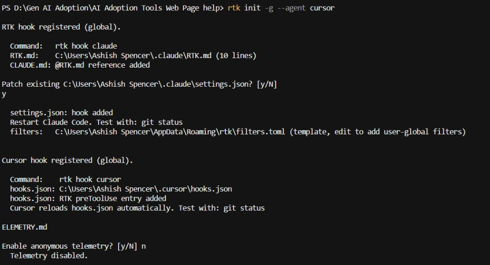
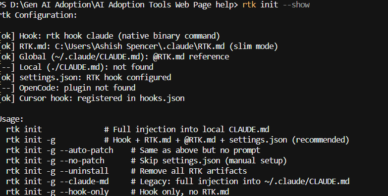

Every time Cursor runs git status, ls, grep, or a test suite, the raw terminal output goes straight into the context window. RTK compresses that output before it lands — same signal, far fewer tokens. You don't change how you work; the hook rewrites commands automatically.
What it saves
Typical compression:
Directory listing 2K → 400 tokens (80%)
Git status 3K → 600 (80%)
Test runners 25K → 2.5K (90%)
Whole session ~118K → ~24K (~80%)Roughly 3× longer sessions before you hit a context limit — fewer "start a new chat and re-explain everything" resets.
github.com/rtk-ai/rtk/releases → rtk-x86_64-pc-windows-msvc.zip
Copy rtk.exe to %USERPROFILE%\.local\bin (Win+R → paste that path).
rtk init -g --agent cursorrtk init --showFully close and reopen Cursor so the hook loads.


Check your numbers
rtk gain # summary
rtk gain --graph # 30-day chart
rtk gain --history # recent commandsOptional: install ripgrep (winget install BurntSushi.ripgrep.MSVC) so grep-style filters work without warnings.
Links: rtk-ai.app · GitHub